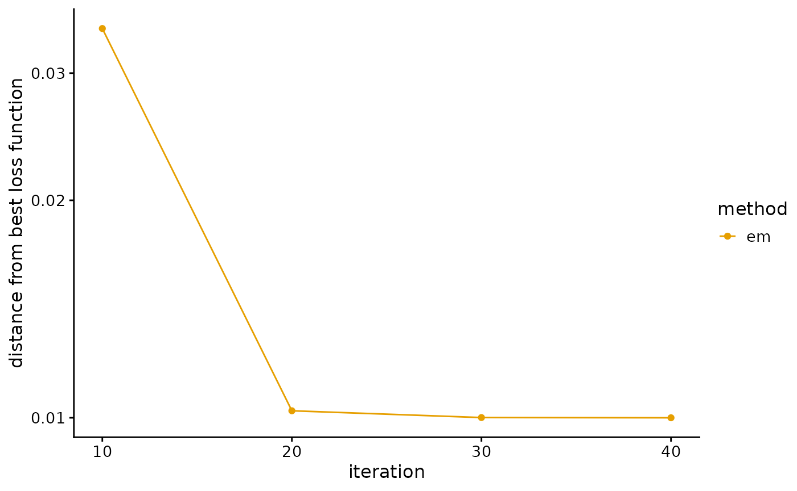
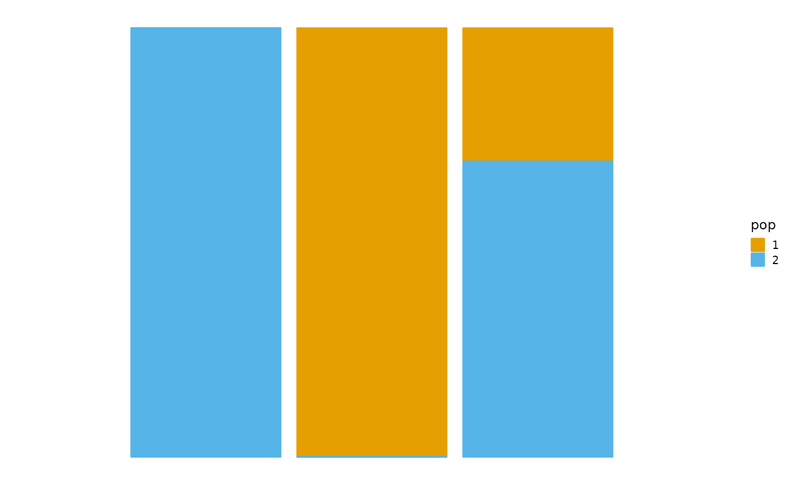

Models and Methods I: Fit PSD Model by EM Algorithm
Jonathon Chow
2022-09-27
Source:vignettes/theory_em.Rmd
theory_em.RmdIntroduction
We use the Expectation-Maximization algorithm (EM) to fit the PSD model (Tang et al. 2005).
PSD Model
The typical data set consists of genotypes at a large number \(J\) of single nucleotide polymorphisms (SNPs) from a large number \(I\) of unrelated individuals. These individuals are drawn from an admixed population with contributions from \(K\) postulated ancestral populations. Population \(k\) contributes a fraction \(p_{ik}\) of individual \(i\)’s genome. Note that \(\sum_{k=1}^Kp_{ik}=1\), and \(p_{ik}\geq 0\). Allele 1 at SNP \(j\) has frequency \(f_{kj}\) in population \(k\). Note that \(0\leq f_{kj}\leq 1\). As a matter of convention, one can choose allele 1 to be the minor allele and the alternative allele 2 to be the major allele. In our model, both the \(p_{ik}\) and the \(f_{kj}\) are unknown. We are primarily interested in estimating the \(p_{ik}\) to control for ancestry in an association study, but our approach also yields estimates of the \(f_{kj}\).
Let \((g_{ij}^1,g_{ij}^2)\) represents the genotype at marker \(j\) of person \(i\), where \(g_{ij}^a\) represent the observed number of copies of allele 1 at seat \(a\). Thus, \((g_{ij}^1,g_{ij}^2)\) equals \((1,1)\), \((1,0)\), \((0,1)\), or \((0,0)\) accordingly, as \(i\) has genotype 1/1, 1/2, 2/1, or 2/2 at marker \(j\).
Note that individuals are formed by the random union of gametes. This produces the binomial proportions \[P(g_{ij}^a=1)=\sum_{k=1}^Kp_{ik}f_{kj},\quad P(g_{ij}^a=0)=\sum_{k=1}^Kp_{ik}(1-f_{kj}),\quad a=1,2.\] Since individuals \(i\), SNPs \(j\), and seats \(a\) are considered independent, the log-likelihood of the entire sample is \[\mathcal{L}(G|P,F)=\sum_{i=1}^I\sum_{j=1}^j\sum_{a=1}^2\bigg\{g_{ij}^alog\Big[\sum_{k=1}^Kp_{ik}f_{kj}\Big]+(1-g_{ij}^a)log\Big[\sum_{k=1}^Kp_{ik}(1-f_{kj})\Big]\bigg\}\] up to an additive constant that does not enter into the maximization problem. Let \(g_{ij}=g_{ij}^1+g_{ij}^2\). So the log-likelihood can also be expressed as \[\mathcal{L}(G|P,F)=\sum_{i=1}^I\sum_{j=1}^j\bigg\{g_{ij}log\Big[\sum_{k=1}^Kp_{ik}f_{kj}\Big]+(2-g_{ij})log\Big[\sum_{k=1}^Kp_{ik}(1-f_{kj})\Big]\bigg\}.\] The parameter matrices \(P=\{p_{ik}\}\) and \(F=\{f_{kj}\}\) have dimensions \(I\times K\) and \(K\times J\), for a total of \(K(I+J)\) parameters.
Note that the log-likelihood is invariant under permutations of the labels of the ancestral populations. Thus, the log-likelihood has at least \(K!\) equivalent global maxima. In practice, this is a minor nuisance and does not affect the convergence of well-behaved algorithms. The constraints \(0\leq f_{kj}\leq 1\), \(p_{ik}\geq 0\), and \(\sum_{k=1}^Kp_{ik}=1\) are more significant hindrances to contriving a good optimization algorithm.
Expectation-Maximization Algorithm
Our goal is to solve the MLE problem for the observed variable \(x\) \[\theta_{MLE}=\mathop{argmax}\limits_{\theta}log P(x|\theta).\] However, when the probabilistic model contains both the observed variable \(x\) and the latent variable \(z\), MLE often cannot find the analytical solution directly. EM algorithm provides a way to solve MLE iteratively.
The first thing we notice is that \[log P(x|\theta) = log P(x,z|\theta)-log P(z|x,\theta) = log \frac{P(x,z|\theta)}{Q(z)} - log \frac{P(x|z,\theta)}{Q(z)},\] Where \(Q(z)\) is the undetermined distribution.
We take the expectation of both sides of this equation, then \[\mathbb{E}_{Q(z)} \Big[LHS\Big] = \int_{z}log P(x|\theta)Q(z)dz = log P(x|\theta)\int_{z}Q(z)dz = log P(x|\theta),\] \[\mathbb{E}_{Q(z)} \Big[RHS\Big] = \int_{z}log \frac{P(x,z|\theta)}{Q(z)}Q(z)dz - \int_{z}log \frac{P(x|z,\theta)}{Q(z)}Q(z)dz := \mathcal{L}(Q(z),\theta) - KL(Q(z)\|P(z|x,\theta)).\] Hence, we have \[log P(x|\theta)=\mathcal{L}(Q(z),\theta) - KL(Q(z)\|P(z|x,\theta)).\]
We use the property of KL divergence \(KL(Q\|P)\geq 0\), The equality holds if and only if \(Q=P\). Thus, we have \[log P(x|\theta)\geq \mathcal{L}(Q(z),\theta),\] Therefore, we also refer to \(\mathcal{L}(Q(z),\theta)\) as the evidence lower bound (ELBO).
Under the condition of the \(i\)th iteration, we first fix parameter \(\theta^{(i)}\), then we take \(Q(z)=P(z|x,\theta)\), and have \(log P(x|\theta^{(i)})=\mathcal{L}(Q(z),\theta)\), that is the E-step. Next, we change the parameter \(\theta\), than maximize the ELBO, and get the parameter \(\theta^{(i+1)}\) of the \((i+1)\)th iteration, that is the M-step. Finally, some simplification can be carried out to obtain the EM algorithm.
More precisely, \[\begin{split} &\theta^{(i+1)}\\ =& \mathop{argmax}\limits_{\theta}\mathcal{L}(Q(z),\theta) \\ =& \mathop{argmax}\limits_{\theta}\int_{z}log \frac{P(x,z|\theta)}{Q(z)}Q(z)dz \\ =& \mathop{argmax}\limits_{\theta}\int_{z}log \frac{P(x,z|\theta)}{P(z|x,\theta^{(i)})}P(z|x,\theta^{(i)})dz \\ =& \mathop{argmax}\limits_{\theta}\int_{z}log P(x,z|\theta)P(z|x,\theta^{(i)})dz - \int_{z}log P(z|x,\theta^{(i)})P(z|x,\theta^{(i)})dz \\ =& \mathop{argmax}\limits_{\theta}\int_{z}log P(x,z|\theta)P(z|x,\theta^{(i)})dz \\ =& \mathbb{E}_{P(z|x,\theta^{(i)})}\Big[log P(x,z|\theta)\Big]. \end{split}\]
In conclusion, at E-step, we compute the expectation \[\mathbb{E}_{P(z|x,\theta^{(i)})}\Big[log P(x,z|\theta)\Big]=\int_{z}log P(x,z|\theta)P(z|x,\theta^{(i)})dz,\] and at M-step, we compute the maximization and update the parameters \[\theta^{(i+1)}=\mathop{argmax}\limits_{\theta}\mathbb{E}_{P(z|x,\theta^{(i)})}\Big[log P(x,z|\theta)\Big],\] until the log-likelihood of incomplete data converges. This is the EM algorithm.
Fit PSD Model by EM Algorithm
We derive the EM algorithm under the PSD model. The observed variable is \(G=\{(g_{ij}^1,g_{ij}^2)\}_{I\times J}\). The model parameters are \(P=\{p_{ik}\}_{I\times K}\) and \(F=\{f_{kj}\}_{K\times J}\). The latent variable is \(Z=\{z_{ij}^1,z_{ij}^2\}_{I\times J}\), \(z_{ij}^a\) is an element of the set \(\{1,\ldots,K\}\), denotes the population from which the genes of individual \(i\) of marker \(j\) at position \(a\) really come.
Consider the log-likelihood of complete data \[\begin{split} &log P(G,Z|P,F)\\ =&log P(G|Z,P,F) + log P(Z|P,F) \\ =&\sum_{i=1}^I\sum_{j=1}^J\sum_{k=1}^K\sum_{a=1}^2\bigg\{1(z_{ij}^a=k)\Big[g_{ij}^alogf_{kj}+(2-g_{ij}^a)log(1-f_{kj})\Big]+1(z_{ij}^a=k)logp_{ik}\bigg\}. \end{split}\]
E-step. Using the linear property of expectations, the expectation after the \(t\)th iteration is \[\begin{split} &\mathbb{E}_{P(Z|G,P^{(t)},F^{(t)})}\Big[log P(G,Z|P,F)\Big]\\=&\sum_{i=1}^I\sum_{j=1}^J\sum_{k=1}^K\sum_{a=1}^2\bigg\{P(z_{ij}^a=k|G,P^{(t)},F^{(t)})\Big[g_{ij}^alogf_{kj}+(2-g_{ij}^a)log(1-f_{kj})+logp_{ik}\Big]\bigg\}. \end{split}\] Using the Bayesian formula, then \[\begin{split} &P(z_{ij}^a=k|G,P^{(t)},F^{(t)})\\ =& P(z_{ij}^a=k|g_{ij}^a,p_{ik}^{(t)},f_{kj}^{(t)})\\ =& \frac{P(g_{ij}^a|z_{ij}^a=k,p_{ik}^{(t)},f_{kj}^{(t)})P(z_{ij}^a=k|p_{ik}^{(t)},f_{kj}^{(t)})}{\sum_{k=1}^KP(g_{ij}^a|z_{ij}^a=k,p_{ik}^{(t)},f_{kj}^{(t)})P(z_{ij}^a=k|p_{ik}^{(t)},f_{kj}^{(t)})}\\ =& \frac{p_{ik}^{(t)}(f_{kj}^{(t)})^{g_{ij}^a}(1-f_{kj}^{(t)})^{(1-g_{ij}^a)}}{\sum_{k=1}^Kp_{ik}^{(t)}(f_{kj}^{(t)})^{g_{ij}^a}(1-f_{kj}^{(t)})^{(1-g_{ij}^a)}}.\end{split}\]
Next, note that \[p_{ik}^{(t)}(f_{kj}^{(t)})^{g_{ij}^a}(1-f_{kj}^{(t)})^{(1-g_{ij}^a)}= \left\{ \begin{aligned} &p_{ik}^{(t)}f_{kj}^{(t)},&\quad &g_{ij}^a=1\\ &p_{ik}^{(t)}(1-f_{kj}^{(t)}),&\quad &g_{ij}^a=0. \end{aligned} \right. \] Thus, we have \[ P(z_{ij}^a=k|G,P^{(t)},F^{(t)})= \left\{ \begin{aligned} &\frac{p_{ik}^{(t)}f_{kj}^{(t)}}{\sum_{k=1}^Kp_{ik}^{(t)}f_{kj}^{(t)}}:=a_{ijk}^{(t)},&\quad &g_{ij}^a=1\\ &\frac{p_{ik}^{(t)}(1-f_{kj}^{(t)})}{\sum_{k=1}^Kp_{ik}^{(t)}(1-f_{kj}^{(t)})}:=b_{ijk}^{(t)},&\quad &g_{ij}^a=0. \end{aligned} \right. \]
M-step. Calculate the parameters for the \((t+1)\)th iteration. The problem is transformed into solving an optimization problem \[\begin{split} \mathop{max}\limits_{P,F} & \quad \mathbb{E}_{P(Z|G,P^{(t)},F^{(t)})}\Big[log P(G,Z|P,F)\Big]\\ s.t. & \quad \sum_{k=1}^Kp_{ik}=1,\quad i=1,\ldots,I. \end{split}\] Using the Lagrange multiplier method, we define the \(\mathcal{L}\) as \[\mathcal{L} = \mathbb{E}_{P(Z|G,P^{(t)},F^{(t)})}\Big[log P(G,Z|P,F)\Big] + \sum_{i=1}^I\tau_i\Big(1-\sum_{k=1}^Kp_{ik}\Big).\] Take the partial derivatives of \(p_{ik}\) and \(f_{kj}\) and set them equal to zero \[\frac{1}{p_{ik}}\sum_{j=1}^J\sum_{a=1}^2P(z_{ij}^a=k|G,P^{(t)},F^{(t)})-\tau_i=0,\quad i=1,\ldots,I,\quad k=1,\ldots,K,\] \[\sum_{i=1}^I\sum_{a=1}^2P(z^a_{ij}=k|G,P^{(t)},F^{(t)})\Big[g_{ij}^a\frac{1}{f_{kj}}+(1-g_{ij}^a)\frac{1}{1-f_{kj}}\Big]=0,\quad j=1,\ldots,J,\quad k=1,\ldots,K.\]
We sum the first equality over k, then \[\frac{1}{\tau_i}\sum_{k=1}^K\sum_{j=1}^J\sum_{a=1}^2P(z_{ij}^a=k|G,P^{(t)},F^{(t)})=\sum_{k=1}^Kp_{ik}=1,\quad i=1,\ldots,I.\] Thus, the Lagrange multiplier is \[\tau_i=\sum_{j=1}^J\sum_{a=1}^2\sum_{k=1}^KP(z_{ij}^a=k|G,P^{(t)},F^{(t)})=\sum_{j=1}^J\sum_{a=1}^21=2J,\quad i=1,\ldots,I.\]
Thus, we obtain the parameter update formula for \((t+1)\)th iteration \[\begin{split} &p_{ik}^{(t+1)}\\ =&\frac{\sum_{j=1}^J\sum_{a=1}^2g_{ij}^aP(z_{ij}^a=k|G,P^{(t)},F^{(t)})+\sum_{j=1}^J\sum_{a=1}^2(1-g_{ij}^a)P(z_{ij}^a=k|G,P^{(t)},F^{(t)})}{2J}\\ =&\frac{\sum_{j=1}^J\sum_{a=1}^2P(z_{ij}^a=k|G,P^{(t)},F^{(t)})}{2J},\quad i=1,\ldots,I,\quad k=1,\ldots,K, \end{split}\] \[\begin{split} &f_{kj}^{(t+1)}\\ =& \frac{\sum_{i=1}^I\sum_{a=1}^2g_{ij}^aP(z_{ij}^a=k|G,P^{(t)},F^{(t)})}{\sum_{i=1}^I\sum_{a=1}^2g_{ij}^aP(z_{ij}^a=k|G,P^{(t)},F^{(t)})+\sum_{i=1}^I\sum_{a=1}^2(1-g_{ij}^a)P(z_{ij}^a=k|G,P^{(t)},F^{(t)})}\\ =&\frac{\sum_{i=1}^I\sum_{a=1}^2g_{ij}^aP(z_{ij}^a=k|G,P^{(t)},F^{(t)})}{\sum_{i=1}^I\sum_{a=1}^2P(z_{ij}^a=k|G,P^{(t)},F^{(t)})},\quad j=1,\ldots,J,\quad k=1,\ldots,K. \end{split}\]
Finally, Using the expression for \(P(z_{ij}^a=k|G,P^{(t)},F^{(t)})\), we can get \[\sum_{a=1}^2g_{ij}^aP(z_{ij}^a=k|G,P^{(t)},F^{(t)})= \left\{ \begin{aligned} &2a_{ijk}^{(t)},&(g_{ij}^1,g_{ij}^2)=(1,1)\\ &a_{ijk}^{(t)},&(g_{ij}^1,g_{ij}^2)=(1,0)\\ &a_{ijk}^{(t)},&(g_{ij}^1,g_{ij}^2)=(0,1)\\ &0,&(g_{ij}^1,g_{ij}^2)=(0,0) \end{aligned} \right. =\Big(\sum_{a=1}^2g_{ij}^a\Big)a_{ijk}^{(t)}=g_{ij}a_{ijk}^{(t)},\] \[\sum_{a=1}^2(1-g_{ij}^a)P(z_{ij}^a=k|G,P^{(t)},F^{(t)})= \left\{ \begin{aligned} &0,&(g_{ij}^1,g_{ij}^2)=(1,1)\\ &b_{ijk}^{(t)},&(g_{ij}^1,g_{ij}^2)=(1,0)\\ &b_{ijk}^{(t)},&(g_{ij}^1,g_{ij}^2)=(0,1)\\ &2b_{ijk}^{(t)},&(g_{ij}^1,g_{ij}^2)=(0,0) \end{aligned} \right. =\Big[\sum_{a=1}^2(1-g_{ij}^a)\Big]b_{ijk}^{(t)}=(2-g_{ij})b_{ijk}^{(t)}.\] Then the parameter update formula can be written as \[p_{ik}^{(t+1)}=\frac{\sum_{j=1}^Jg_{ij}a_{ijk}^{(t)}+\sum_{j=1}^J(2-g_{ij})b_{ijk}^{(t)}}{2J},\quad i=1,\ldots,I,\quad k=1,\ldots,K,\] \[f_{kj}^{(t+1)}\frac{\sum_{i=1}^Ig_{ij}a_{ijk}^{(t)}}{\sum_{i=1}^Ig_{ij}a_{ijk}^{(t)}+\sum_{i=1}^I(2-g_{ij})b_{ijk}^{(t)}},\quad j=1,\ldots,J,\quad k=1,\ldots,K.\]
In conclusion, at E-step, we compute the expectation \(a_{ijk}\) and \(b_{ijk}\), and at M-step, we compute the maximization and update the parameters \(p_{ik}\) and \(f_{kj}\), until the log-likelihood of incomplete data \(\mathcal{L}(G|P,F)\) converges. This is the EM algorithm for PSD model.
Acceleration
We can speed up the EM algorithm in two ways. The first is the code level. We write the core parameter update part in C++. The second is the algorithm level, we can use SQUAREM to accelerate the algorithm.
Algorithm Implementation
We present the implementation of EM algorithm in R package AwesomePackage. You can fit the PSD model using the EM algorithm using the function psd_fit_em. At the same time, you can use plot_loss to see changes in log-likelihood and plot_structure to plot structure.
Here is an example.
library(AwesomePackage)
G <- matrix(c(0,0,1, 0,2,1, 1,0,1, 0,1,0, 1,0,0), 3, 5)
result <- psd_fit_em(G, 2, 1e-5, 50)
result## $P
## [,1] [,2]
## [1,] 2.423370e-07 9.999998e-01
## [2,] 1.000000e+00 6.428104e-10
## [3,] 3.108029e-01 6.891971e-01
##
## $F
## [,1] [,2] [,3] [,4] [,5]
## [1,] 6.092029e-07 1.000000e+00 2.200155e-19 4.135085e-01 4.789181e-167
## [2,] 2.765476e-01 4.936331e-06 5.737364e-01 6.555430e-176 3.116884e-01
##
## $Loss
## [1] -0.7320094 -0.7076503 -0.7074319 -0.7074250
##
## $Iterations
## [1] 40
P <- result$P
plot_structure(P)
See AwesomePackage for details.